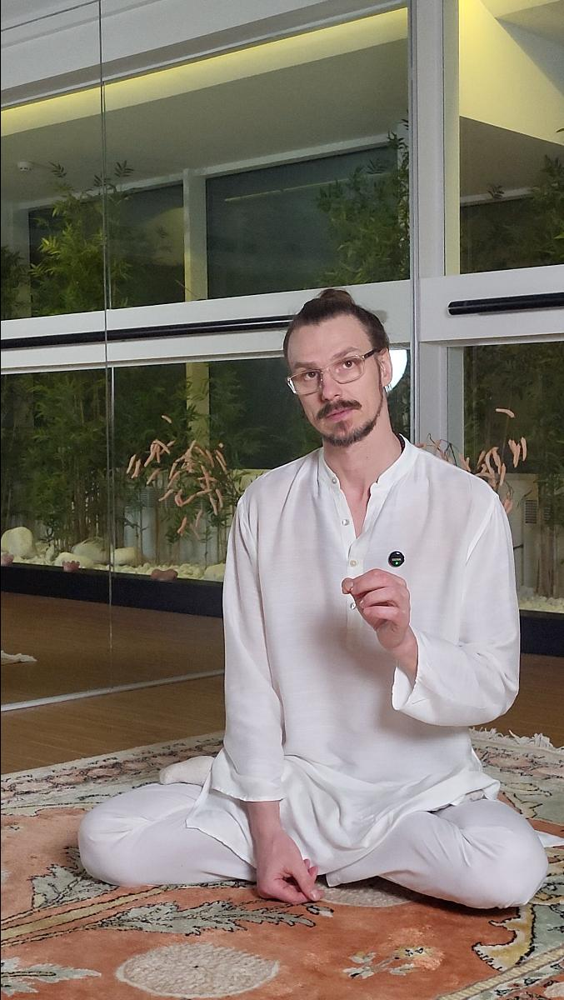

Три елемента героя consult / herbs / dosha зараз стоять на своїх ad-hoc токенах, окремо від матеріального шару платформи: .hero-badge, .hero-chips span, .hv-stat. Нижче — поточний стан поруч із пропозицією на --cw-mat-*, у двох контекстах, де опиняється бейдж: на кремовому фоні (десктоп) і поверх фото (мобіла + фото-картки).
Значення взяті напряму з src/app/globals.css / cw-tokens.generated.css — це не ілюстрація «в дусі», а реальні токени.
--mat-shadow/старих значеннях — не орієнтуйся на нього); (2) не заводити окремий тьмяний варіант для .hv-stat/мобільного .hero-badge — замість --cw-mat-inverse-control (34% темний скрим, який на світлих ділянках фото провалював контраст ~2.0 при потрібних 4.5) усе, що сидить на фото, тепер їде на тому самому теплому склі, просто на щільнішому floor (--cw-mat-tint-media, 86%) з тим самим тёмним ink-текстом — перевірено і на чорному, і на білому фото (8.5–11.8). Реалізовано в src/landing-static/shared/css/landing.css (.hero-badge, .hero-chips span, .hv-stat) і network-tokens.css (--cw-net-mat-tint-media). Ця сторінка лишається як історія рішення, не як специфікація.
Розбираємо стан цілком: конституція, травлення, ритм дня, стрес.

Розбираємо стан цілком: конституція, травлення, ритм дня, стрес.
--chip. На кремовому тлі контраст без проблем: це саме той контекст, для якого М1 і проектувався..hv-stat лежить прямо на фото — світлому в одних ділянках, темному в інших. Світле М1-скло (як у контексті 1) на світлій ділянці фото злилося б у нечитабельну пляму. --cw-mat-inverse-control — вже існуючий токен саме для цього випадку (34% темного скла, світлий текст): платформа так само рятує .heroBadge поверх фото героя в PlatformBlocksOrientation.module.css.Розбираємо стан цілком і збираємо маршрут під вас.
Розбираємо стан цілком і збираємо маршрут під вас.
.hero-badge — не один токен, а перемикач за контекстом: --cw-mat-tint на десктопі (стоїть на кремовому тлі поруч з фото), --cw-mat-inverse-control нижче 881px (стоїть на фото). Це відповідає тому, як сам layout уже перемикає .hero-badge між grid-area badge і позицією над фото — просто до цього перемикання додається токен фону.--cw-mat-inverse-control існує в globals.css (платформа), але не прокинутий у cw-tokens.generated.css як --cw-net-mat-inverse-control — на відміну від --cw-net-mat-tint/-surface/-stroke, які вже є. У цьому етюді значення просто вписані напряму (rgba(13,27,23,.34)). Перш ніж чіпати .hv-stat/мобільний .hero-badge в реальному CSS, треба додати цей міст у generate-design-tokens.mjs — інакше мережа знову скопіює число замість посилання, і ми повторимо той самий дрейф, який чинили token-check перед цією сесією.